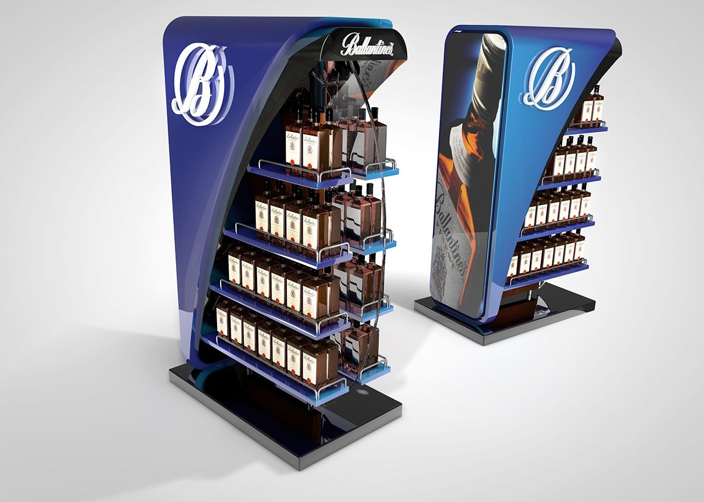
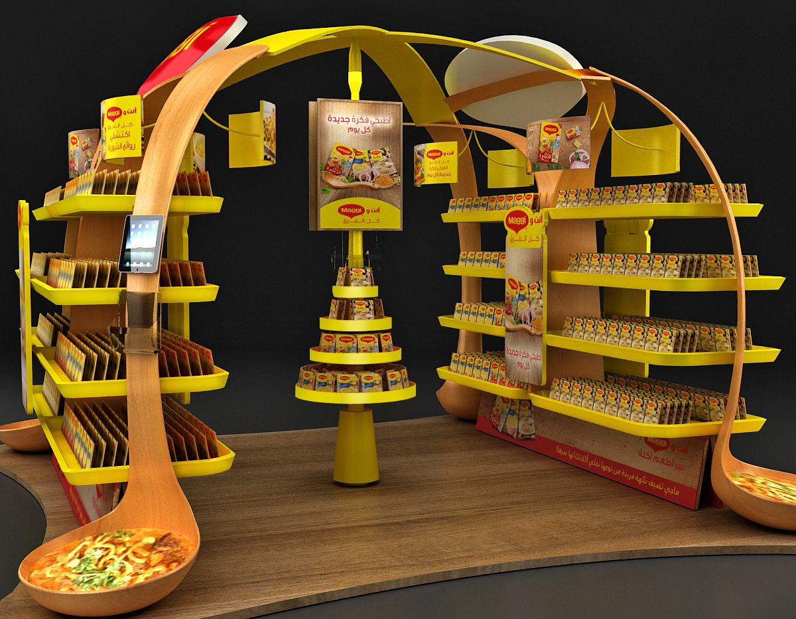

POSm (Point of Sales materials) - это рекламные и маркетинговые материалы, которые используются
прямо на месте продажи товара или услуги. Они размещаются в пространстве точек продажи, таких как
супермаркеты, розничные магазины, рестораны и другие торговые объекты.

POSm материалы выполняют несколько функций:
1. Привлечение внимания: они разрабатываются с целью привлечения визуального внимания потенциальных
покупателей и вызывают желание приобрести товар или услугу. Это могут быть яркие и привлекающие
внимание вывески, постеры, стенды, баннеры и подобные материалы.
2. Информирование: POSm материалы содержат информацию о продукте или услуге, их характеристиках,
особенностях и преимуществах. Они помогают потенциальным покупателям лучше понять предлагаемый
продукт или услугу, что способствует принятию решения о покупке.
3. Продвижение акций и специальных предложений: POSm материалы широко используются для продвижения
акций, скидок, конкурсов и других специальных предложений. Они могут содержать информацию о
временных скидках, подарках при покупке или других бонусах, что стимулирует потенциальных
покупателей сделать покупку.
4. Брендинг и узнаваемость: POSm материалы могут быть использованы для усиления брендирования и
повышения узнаваемости товара или услуги. Они могут содержать логотипы, символику, слоганы и другие
элементы, которые помогают установить связь с брендом и создать уникальную идентичность.

Примеры POSm материалов включают в себя стенды с образцами продуктов, дисплеи, витрины, световые
вывески, афиши, наклейки на полу, презентационные материалы и многое другое.
POSm материалы играют важную роль в стимулировании продаж и создании благоприятной атмосферы для
покупателей на месте продажи. Их эффективное использование помогает улучшить видимость, привлечь
больше клиентов и повысить уровень продаж.